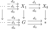

2.1. Topoi and descent
The definition of topoi relies on the concept of descent.
Let \(I\) be a small category, and let \(T\) be a category with pullbacks and \(I\)-indexed colimits. We say that \(T\) satisfies descent for \(I\)-indexed colimits, or that \(I\)-indexed colimits are van Kampen, if the functor \begin{align*} T\catop \to \Cat, \qquad X \mapsto T_{/X} \end{align*} takes \(I\)-indexed colimit diagrams in \(T\) to limit diagrams in \(\Cat\). Explicitly, for every diagram \(X_{\bullet}\colon I \to T\) the canonical functor
is an equivalence.
A topos is a presentable category satisfying descent for all colimits. We will alternatively refer to a topos as a logos.
Let us unwind this definition. Given a small category \(I\) and an \(I\)-indexed diagram \(X_{\bullet} \colon I \to T\), set \(X := \colim_i X_i\). The objects of the limit \(\lim_{i \in I\catop}T_{/X_i}\) are families of objects over the \(X_i\) equipped with compatible base-change identifications. Descent asserts that every such family is obtained uniquely from an object over \(X\).
To understand this condition better, we provide an alternative description of this limit in terms of cartesian natural transformations.
Given two functors \(F,G\colon I \to T\), a natural transformation \(\alpha\colon F \to G\) is called cartesian if for every morphism \(i \to j\) in \(I\) the naturality square
is a pullback square. We denote by \(\Fun^{\cart}(I,T) \subseteq \Fun(I,T)\) the wide subcategory spanned by the cartesian natural transformations.
Given a diagram \(X_{\bullet}\colon I \to T\), evaluation at \(i \in I\) determines a functor \(\ev_i\colon \Fun^{\cart}(I,T)_{/X_{\bullet}} \to T_{/X_i}\). Furthermore, by definition of cartesianness these evaluation functors are compatible with base change, resulting in a comparison functor \(\Fun^{\cart}(I,T)_{/X_{\bullet}} \to \lim_{i \in I\catop} T_{/X_i}\).
Let \(C\) be a category with pullbacks and let \(X_{\bullet}\colon I \to C\) be a functor. Then the functor \(\Fun^{\cart}(I,C)_{/X_{\bullet}} \to \lim_{i \in I\catop} C_{/X_i}\) is an equivalence.
More informally, objects of the limit are given by \(I\)-indexed diagrams \(Y_{\bullet}\) in \(C\) equipped with a cartesian natural transformation \(Y_{\bullet} \to X_{\bullet}\).
Proof
With this alternative description of \(\lim_i T_{/X_i}\) at hand, we can immediately deduce that the functor \(T_{/X} \to \lim_i T_{/X_i}\) admits a left adjoint:
Let \(T\) be a category with pullbacks and \(I\)-indexed colimits, and let \(X = \colim_i X_i\) be a colimit in \(T\). Then the functor \(T_{/X} \to \lim_i T_{/X_i}\) admits a left adjoint
sending a cartesian transformation \(Y_{\bullet} \to X_{\bullet}\) to its colimit \(\colim_i Y_i \to \colim_i X_i\).
Proof
- The category \(\Fun(I,T)_{/X_{\bullet}}\) contains the limit \(\lim_{i \in I\catop} T_{/X_i} \simeq \Fun^{\cart}(I,T)_{/X_{\bullet}}\) as a full subcategory: given transformations \(Y_{\bullet} \to Z_{\bullet} \to X_{\bullet}\), if both \(Z_{\bullet} \to X_{\bullet}\) and \(Y_{\bullet} \to X_{\bullet}\) are cartesian transformations, then so is \(Y_{\bullet} \to Z_{\bullet}\) by the pasting law for pullback squares.
- Since any transformation \(\const Y \to \const X\) between constant diagrams is cartesian, and cartesian transformations are closed under base change, the right adjoint \(T_{/X} \to \Fun(I,T)_{/X_{\bullet}}\) lands in this full subcategory.
We can now characterize when the functor \(T_{/X} \to \lim_i T_{/X_i}\) is an equivalence. By Lemma 2.5, this happens precisely when the unit and counit of the adjunction are natural isomorphisms. Explicitly, this means:
Counit: For any map \(Y \to X = \colim_i X_i\) in \(T\), the canonical map \(\colim_i (X_i \times_X Y) \to Y\) is an isomorphism.
Unit: Given a cartesian transformation \(Y_{\bullet} \to X_{\bullet}\) of functors \(I \to T\), each of the maps \(Y_i \to (\colim_i Y_i) \times_{\colim_i X_i} X_i\) is an isomorphism.
Since these conditions will frequently show up in the remainder of these notes, it is useful to give them names:
Definition 2.6. (Effective colimits)
Let \(T\) be a category with pullbacks and \(I\)-indexed colimits. We say that \(I\)-indexed colimits in \(T\) are effective if, for every cartesian transformation \(Y_{\bullet} \to X_{\bullet}\) of functors \(I \to T\), the extended natural transformation \(\overline{Y}_{\bullet} \to \overline{X}_{\bullet}\) of colimit cocones \(I^{\triangleright} \to T\) is again cartesian, i.e. for every \(j \in I\) the commutative square
is a pullback square.
Definition 2.7. (Universal colimits)
Let \(T\) be a category with pullbacks and \(I\)-indexed colimits. We say that \(I\)-indexed colimits in \(T\) are universal if, for every morphism \(f\colon A \to B\), the pullback functor \(f^*\colon T_{/B} \to T_{/A}\) preserves \(I\)-indexed colimits.
For a category \(T\) with pullbacks and \(I\)-indexed colimits, the following conditions are equivalent:
\(I\)-indexed colimits are universal in \(T\);
For every diagram \(X_{\bullet}\colon I \to T\), the counit of the adjunction \(T_{/X} \leftrightarrows \lim_i T_{/X_i}\) is an isomorphism;
For every diagram \(X_{\bullet}\colon I \to T\), the functor \(T_{/X} \to \lim_i T_{/X_i}\) is fully faithful.
Proof
With this terminology, we may summarize the above discussion as follows:
Let \(T\) be a category with pullbacks and \(I\)-indexed colimits. Then \(T\) satisfies descent for \(I\)-indexed colimits if and only if \(I\)-indexed colimits are both effective and universal.
In particular, we get:
A category \(T\) is a topos if and only if it is presentable and \(I\)-indexed colimits are both effective and universal for every small category \(I\).
2.1.1. Examples of descent
Let us illustrate the descent condition by giving some examples.
Example 2.11. (Initial object)
Let \(T\) be a category with an initial object. Then the initial object \(\emptyset\) is van Kampen if and only if it is strictly initial, meaning that any morphism \(X \to \emptyset\) is an isomorphism.
Indeed, by definition \(\emptyset\) is van Kampen if and only if the functor \(T_{/\emptyset} \to *\) is an equivalence. This functor admits a fully faithful left adjoint \(* \to T_{/\emptyset}\) hitting the identity \(\id_{\emptyset}\). For the functor to be an equivalence, the counit \(\emptyset \to X\) must be an isomorphism for every \(X \in T_{/\emptyset}\), which is precisely the universality condition.
Example 2.12. (Coproducts)
For a category \(T\) with arbitrary coproducts, we say that coproducts are disjoint if for all \(X, Y \in T\) the diagram
is a pullback square. We claim that arbitrary coproducts in \(T\) are van Kampen if and only if they are universal and \(T\) has disjoint coproducts.
By definition, coproducts are van Kampen if and only if they are universal and for every collection of maps \(\{Y_i \to X_i\}_{i \in I}\) the commutative square

is a pullback square for every \(j \in I\). To see that this reduces to disjointness, consider \(X' := \bigsqcup_{i \in I \setminus \{j\}} X_i\) and \(Y' := \bigsqcup_{i \in I \setminus \{j\}} Y_i\). We may write \(X = X_j \sqcup X'\) and \(Y = Y_j \sqcup Y'\). Invoking universality of coproducts once more shows that the condition reduces to disjointness of binary coproducts.
Example 2.13. (Group actions)
This example previews the groupoid objects introduced in Subsection 2.2.1. Informally, a groupoid object is a simplicial object encoding objects, invertible morphisms between them, and all the coherences for composition. A group object is the special case in which the object of objects is terminal.
Let \(T\) be a topos, and let \(G\) be a group object in \(T\), regarded as a groupoid object \(G_{\bullet}\colon \simp\catop \to T\) satisfying \(G_{0} = *\). Let \(\bB G := \colim_{[n] \in \simp\catop} G_n\). Then there is an equivalence
In other words, a module over \(G\) is a simplicial object \(X_{\bullet}\) with a cartesian transformation \(X_{\bullet} \to G_{\bullet}\), which we can depict (suppressing degeneracies) as a simplicial diagram of face maps:

with each square cartesian. In particular, this implies \(X_1 \simeq G \times X_0\). The two maps \(G \times X_0 \simeq X_1 \to X_0\) can then be interpreted as the projection map and an action map. The rest of the simplicial diagram \(X_{\bullet}\) records the higher coherences of this \(G\)-action on \(X_0\).
Let \(T\) be a topos. Given an anima \(A \in \An\), we obtain an equivalence
We refer to this equivalence as the Grothendieck construction.
Figure out which colimits are van Kampen in the following categories:
The category \(\Set\) of sets, the category \(\An_{\leq n}\) of \(n\)-truncated animae;
A stable cocomplete category;
The opposite category \(\An\catop\).
2.1.2. Descent via pullback squares
The descent condition can be reformulated in terms of colimits in the category \(\Ar^{\pb}(T)\) of pullback squares in \(T\). This is defined as the wide subcategory of \(\Ar(T)\) whose morphisms are the pullback squares in \(T\).
Proposition 2.16. (Rezk)
A presentable category \(T\) is a topos if and only if \(\Ar^{\pb}(T)\) admits colimits and the inclusion \(\Ar^{\pb}(T) \hookrightarrow \Ar(T)\) preserves colimits.
Proof
Let \(T\) be a topos and let \(L\colon T \to T'\) be a left exact functor localization. Then also \(T'\) is a topos.
Proof
References
- Jacob Lurie. Higher topos theory. Ann. Math. Stud. 170, Princeton, NJ: Princeton University Press. 2009.